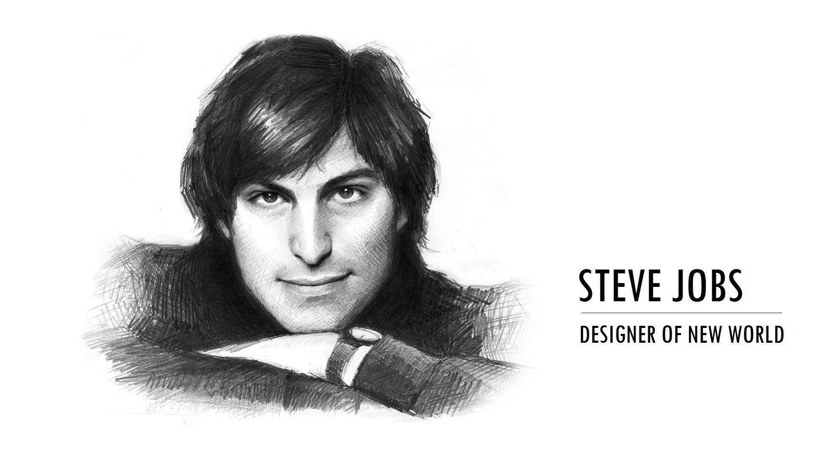

STEVE JOBS

“Don’t let the noise of others’ opinions drown out your own inner voice.” -Steve Jobs
TIMELINE
- 1955 Start. Steve was born on February 24th, and adopted into the Jobs family.
- 1968 First Job. Is offered a summer job at Hewlett Packard (also known as HP).
- 1972 College. Jobs meets friend Steve Wozniak and attends Reed College in Oregon with him for 18 months.
- 1976 Start of Apple. Steve Jobs and Steve Wozniak begin making Apple Computers.
- 1980 Millionaire. Became a millionaire at 25 years old.
- 1984 Macintosh. Apple presents the Macintosh computer to the world.
- 1985 Disputes at Apple. The board at Apple forces Steve to loose all his power of the Apple business. He leaves Apple soon after.
- 1997 Returns. Steve returns to work at Apple
- 2001 The iPod. Steve Jobs and Apple introduce the iPod in 2001.
- 2007 The iPhone. Apple presented the iPhone to the world.
- 2011 The End.
To know more about Steve click here.